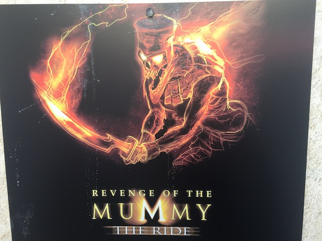
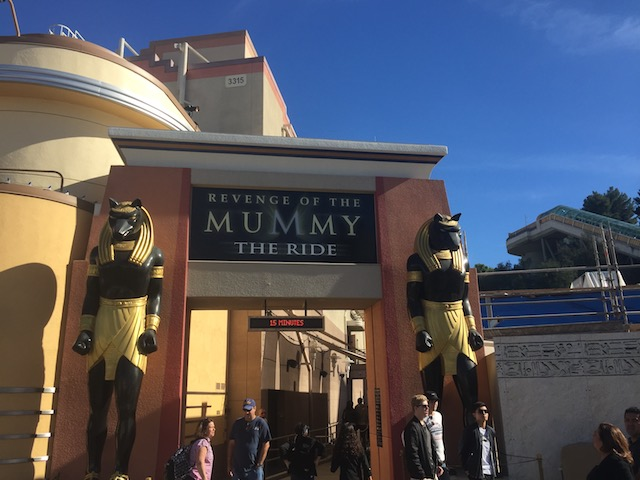

| |
Revenge of the Mummy Review

Today at the Universal Studios Hollywood, we are here to ride and review Revenge of the Mummy. After wandering through the line and seeing some nice Egyptian Theming, we reach the cars. We take a seat and pull down the big bulky lap bar. And now we are on our way. We start out by seeing some guy yell something at us, before getting electrocuted. We then go around some slow turns and see a bunch of mummys who want us. Its kind of like a dark ride at this point, only with much better theming than most dark rides. A monsterous head pops out from the sand and yells "So you want to really experiences the riches of eternal life?" (BTW, if you really do, you're in the wrong place. You'll want to google Aubrey DeGray for that). He then tells us to join them in Eternal Death instead. We go through some more dark ride, see some more spooky mummys, and then the sand head shouts "NOW YOUR SOULS BELONG TO ME!!!!" before we launch. The coaster has now begun. After the launch, we go up a quick airtime hill and drop down into the dark. Yeah, its not nearly as crazy as Floridas Mummy, but its still really damn fun. I can't fully comprehend the coaster section, but I do know it contains speed, decent airtime, flashing mummys, and some tight turns with good laterals, but then all of a sudden, it just stops. For literally no reason, we have now just stopped. We then see spiders crawl all across the wall before they move into the car, which tickles some, and freaks out the ones with arachnophobia. We then head backwards and we hear an evil laugh following us through the backwards coaster section. Its not amazing, its pretty tame in this part, not going nearly as fast nor having tight turns or laterals. But it is still fun backwards and we do hear the monster scream "YOUR SOULS ARE MINE!!!!!" We then stop. Creepy music is playing. We must be building up to something. =) We turn around, we see the sand head scream at us, hear a boom, and we see the station. The ride is over. BIGGEST F*CKING LETDOWN EVER!!!!!! Come on!!! Please don't have endings like that!!! I mean, people complain about Ninja @ SFMM and Adventure Express @ Kings Island having let down endings, but this takes the cake. Please at least have the coffee guy. He's funny. But even with the let down ending, Revenge of the Mummy is still a very fun and enjoyable coaster. Yeah, is not the most amazing coaster ever and the Florida one is better, but its still a good ride. Its got some good airtime, good speed, and the theming is indeed done well. Definetly check it out if you're at Universal Studios Hollywood.
8/10
Location: Universal Studios Hollwood
Opened: 2004
Built by: Premier
Last Ridden: January 8, 2017
Revenge of the Mummy Photos


|